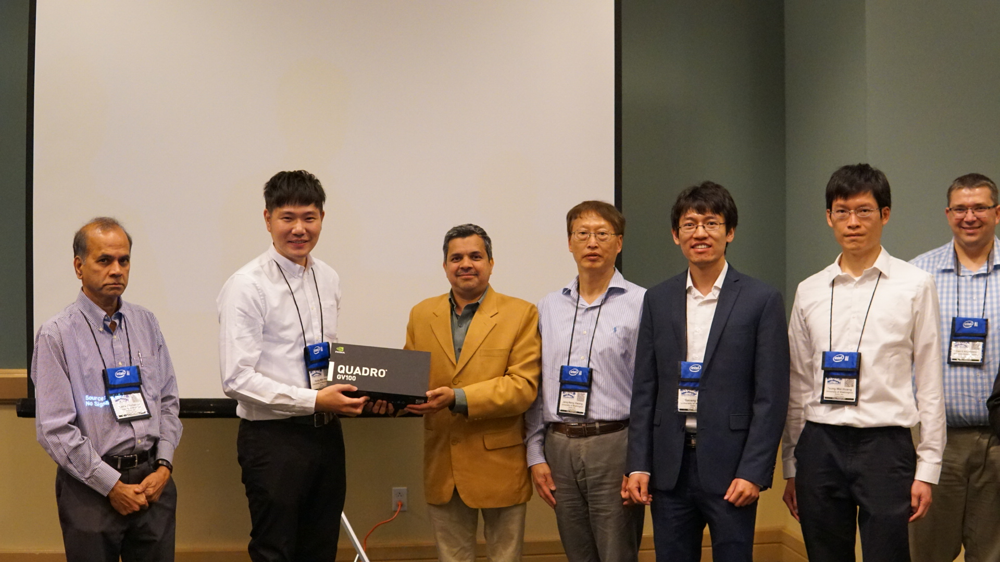
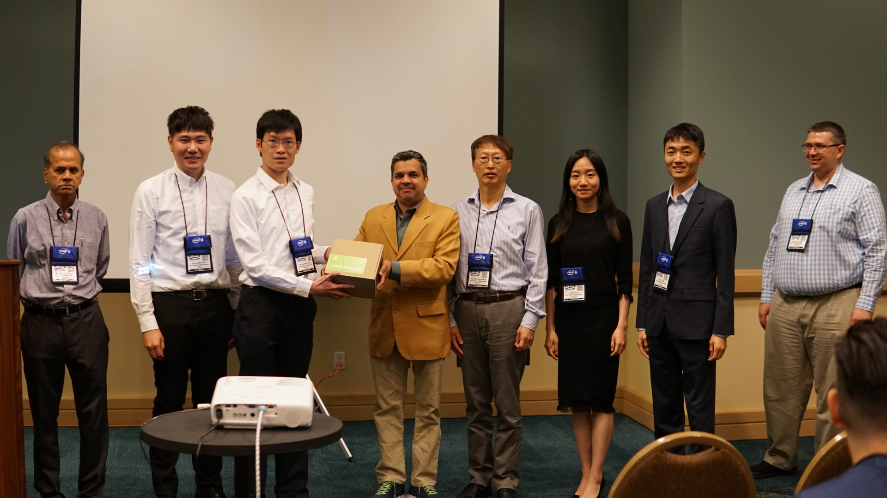

Our team win the AI City Challenge Workshop in CVPR 2019
June 16, 2019
Our team representing the University of Washington is the Winner of Track 1 (City-Scale Multi-Camera Vehicle Tracking) and the Runner-up of Track 2 (City-Scale Multi-Camera Vehicle Re-Identification) and Track 3 (Traffic Anomaly Detection) at the AI City Challenge in CVPR 2019.
IEEE/CVF CVPR 2019 AI City Challenge
- Track 1: City-Scale Multi-Camera Vehicle Tracking (22 final submissions). 40 cameras, 10 intersections, 3-hour videos.
- Track 2: City-Scale Multi-Camera Vehicle Re-Identification (84 final submissions). 1052 queries from 36,935 galleries.
- Track 3: Traffic Anomaly Detection (23 final submissions). 100 training/testing, 15 minutes each.

Track 1: City-Scale Multi-Camera Vehicle Tracking

Track 2: City-Scale Multi-Camera Vehicle Re-Identification

Track 3: Traffic Anomaly Detection